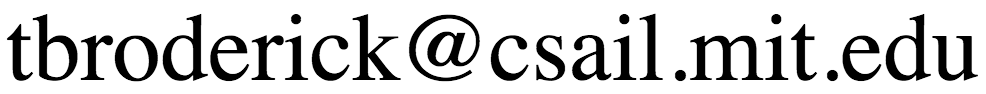

Nonparametric Bayesian Methods: Models, Algorithms, and Applications
This tutorial took place at the Foundations of Machine Learning Boot Camp at the Simons Institute at UC Berkeley. See this link for the latest versions and videos of this tutorial.
Wednesday, January 25, 2017
Part I (Tamara Broderick): 9:30–10:30 AM
Part II (Michael I. Jordan) 11:00 AM–12:00 PM
Part III (Michael I. Jordan) 2:00–3:00 PM
Part IV (Tamara Broderick): 3:30–4:30 PM
Instructors:
Professor Tamara Broderick and Professor Michael I. Jordan
Email: 
Description
Nonparametric Bayesian methods make use of infinite-dimensional
mathematical structures to allow the practitioner to learn more from
their data as the size of their data set grows. The underlying mathematics
is the theory of stochastic processes, with fascinating connections to
combinatorics, graph theory, functional analysis, and convex analysis.
In this tutorial, we'll introduce such foundational nonparametric
Bayesian models as the Dirichlet process and Chinese restaurant
process, and we will discuss the wide range of models captured by the
formalism of completely random measures. We'll present some of the
algorithms used for posterior inference in nonparametric Bayes, and
we will discuss some open theoretical problems.
Materials